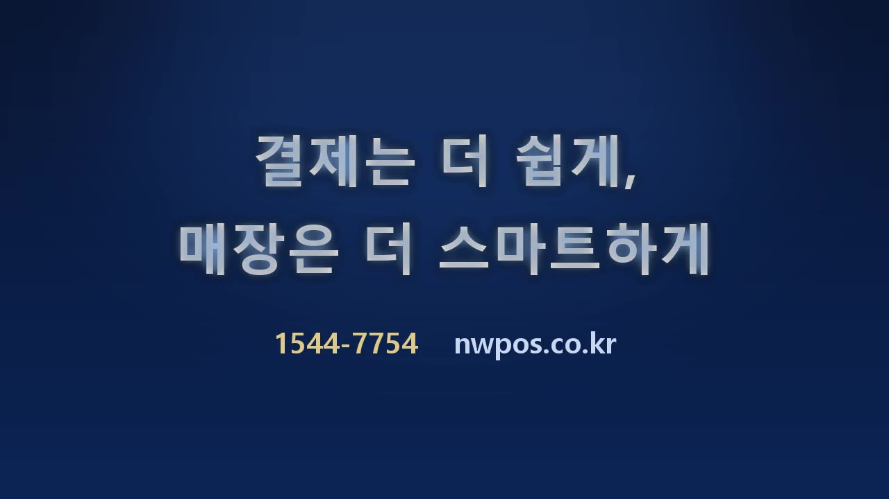

월·토·일 엔드카드를 화요일 프리미엄 형식으로 통일
전무님 지적대로, 매일 SNS 영상은 밋밋한 제네릭 카드를 쓰고 있었고 화요일 제품영상은 프리미엄(제품+금색 좌측 브랜딩) 형식이었습니다. 아래 後(개선)안을 표준 엔드카드로 만들었습니다. 승인해 주시면 앞으로 모든 콘텐츠에 자동 적용합니다.
가로 16:9 (유튜브)
前 · 현재(제네릭)
밋밋한 남색 · 중앙정렬 회색 텍스트 · 제품 없음
後 · 개선(프리미엄)▶ 자동재생 · 제품 비주얼 + 금색 좌측 브랜딩 + 액센트선
적용 방식
- 표준 엔드카드 교체 — 이 프리미엄 엔드카드를 표준(outro)으로 등록 → 이후 모든 자동제작 영상이 자동으로 이 형식이 됩니다.
- 드라마도 동일 적용 — 토(웹툰)·일(영화)도 스토리는 그대로 두고 마무리 엔드카드만 이 프리미엄으로.
- 발행 전 영상 교체 — 아직 발행 전인 7/10(금)·7/11(토)·7/12(일) 및 다음 주 영상은 이 엔드카드로 다시 붙여 발행.
- 이미 발행된 7/4·5·6은 그대로 유지(전무님 지시).
▶ 이 프리미엄 엔드카드로 진행할까요? 제품 비주얼(현재 N250 올인원)·색감·문구 위치 등 바꿀 부분 있으면 알려주세요. OK시 표준 등록 + 발행 전 영상들에 적용하겠습니다.